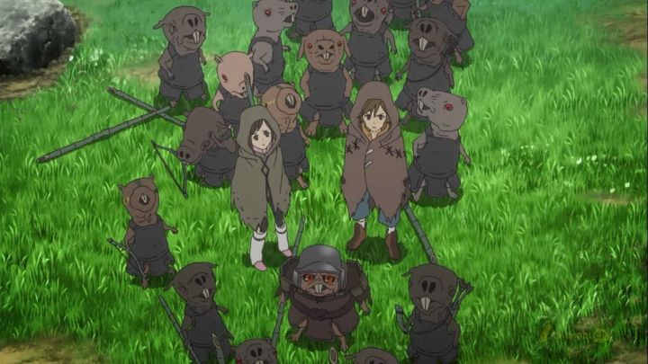

DISCLAIMER: Minor spoilers.I still remember when I saw the first episode of the 2012 anime "From The New World," based on a novel of the same name. It happened to be through a school anime club (a good opportunity to discover shows you would otherwise completely miss, since there's so much media to choose from). In its opening minutes, it's immediately haunting and arresting. To date, I haven't seen anything else quite like it. I didn't actually see the entire series at the club after missing a few meetings, but I was convinced that it was an important work. Some years later, I finally got around to sitting down and watching the whole thing. Indeed, for anyone looking for smart anime, this could easily be in your top ten, if not your top five. One of the amazing things about "From The New World" is also the most off-putting aspect: the setting is dense and rich with atmosphere and detail. It paints a world and society that has evolved to be different from what we are accustomed to. In fact, it's difficult to summarize a story or plot in the series... it's difficult to say it even has one, other than to say "the world" itself is the story. Part of the engagement, the thing that keeps you awake after watching each episode, is trying to unravel the complex labyrinth of what you had witnessed, to fully appreciate the mysteries and horror being presented. If possible, I recommend taking my word for it that this is a good show, and going in blind, with the assumption that you enjoy fantasy-horror-mysteries. The anime opens with a brief prologue scene of a handful of teenagers in modern Japan, ostracized by their peers, suddenly awakening to psychic powers (the ability to move objects by looking at them) and killing said peers in a flash, causing destruction they can't, or won't, control. It then jumps to a different period in time (a quick subtitle says it's about 1000 years into the future, but could very well have been in the distant past), seemingly with no technology. Slowly, we learn that psychic powers in humans is still relatively commonplace, awakening in children around the time of puberty. After signs of each person's power, they undergo a sacred Buddhist-inspred ritual to trap that power, and then the child transfers to a new school specifically to train their control of this ability. The series follows five main characters, all children attending this school. One of whom narrates the episodes, occasionally warning and foreshadowing the viewer of the horrible tragedies to come much later.Even in the early episodes, the viewer gets a hint of some of the mysteries. How the human society evolve from using electricity to seemingly going backwards to a simpler way of living? What happens to children who don't come to show any powers to move objects with their mind? Why did underperforming kids in the class suddenly go missing? Why aren't children allowed to go outside the barriers around the commune? What's the deal with the sentient naked-mole-rat-like creatures that work as slaves to the human adults? Are the stories about ogres and monster cats real? There are so many unanswered questions, most of which do eventually get answered, many as early as episode 4 (but then still leaving more questions), and the existance of the questions themselves hint at the sinister nature of this world, a world where psychic powers randomly develop in some humans, and humans have evolved their society to handle it as best they could.As the world-building continues, taking place at different times (when the children are 12, 14, and then 26) the story continues to be a little unfocused. For example, there's a long arc involving a civil war among the mole-rat people early on (ultimtely, the mole-rate people are one of the most important parts of the larger story, which might disappoint some who weren't expecting it). And in early episodes, a bit too much time is spent on school activities, in the way you might expect in thousands of other anime with a school-setting... it's all important to explain developments in the plot, but much of it could have been condensed as well. The nature of this strategy might frustrate viewers who just want to get to the explanation and to see how things end, but I still argue it's worth watching all of it as it is. Outside of the anime, you can of course read the novel (not available in English) or manga adaptation. The manga is a bit controversial; I haven't read it, but I've heard it relies heavily on depicting the friendship / relationship between the main characters in their adolesence, including physically touching each other in inapproriate ways. Some discussions have suggested that Western interpretations on that are just due to cultural differences, but whatever the case, it's a shame that fanservice had to be present in a story and world as powerful as this one. By comparison, the anime has no such fanservice, and is all the stronger for it.... that's not to say the romance element is at all ignored in the anime. Using the explanation that physical intimacy has become a crucial part of these kids dealing with their stress and trusting each other, "From The New World" is very much a coming-of-age story, complete with confusion, jealousy, and fear, partially fueled by physical love. This briefly occurs at the 12-years-old arc, and much more aggressively in the 14-years-old arc. The age might scare off some Western viewers: as a reminder, the age of consent in the USA is 16, and in Japan, it's 13. There's no explicit sex on display, and virtually none of it is depicted as sexualized fanservice, but there is a lot of kissing and fondling. Furthermore, in this society, there are no taboos about whom you love: whether it's out of familiarity or other reasons, same-sex relationships are common. At the 14-age arc, two of the boys in the main cast date each other, with a detailed animation of them French-kissing while looking at each other's eyes. Saki, the main character, is conflicted due to her having a crush on one of them, and deals with it by becoming lovers with her girlfriend. Later, when one of the boys breaks up, the other starts dating another character, again the same sex, going so far as to tap the other's bottom and giggle on their way to class. Unintentionally, the viewer will probably laugh or be shocked by some of this. Heterogeneous couples do occur, but primarily out of awareness that it is necessary for children to be born, rather than preference. As adults, two of the kids (boy and girl) even bond with each other, primarily over their mutual love for the one boy. All things considered, the depiction of sexuality here is forward thinking and relatively mature, and realistically, not unlike what you've probably experienced when you were 14. But added to the already unfocused storyline, it ultimately feels unecessary to any of it, and could have easily been cut out to save on time. It's existence here is primarily to remind us that the five kids are human, vulnerable, and do all love each other, helping us better perceive their mental state through it all. And ultimately, not all of the mysteries are spelled out. As a minor spoiler, not all of the five children survive to the end of the series. What happens to them is implied, but is always off-screen. The fate of two of them in particular feels like it needed a more explicit explanation, although there are enough literary devices used to help the viewer come up with multiple theories, one of which is especially gruesome to imagine (perhaps letting the mind race was the whole point). Exactly where the show ultimately ends up might be unexpected and disappointing, depending on what you wanted (I know most anime have an obligitory "summer festival" episode, but did we really need the final arc to revolve around that, the one element that reminds us that this is Japan and not a universal unnamed setting?). Anyway, there's a lot going on in "New World." It deals with themes of love and sex, fear, power, authority, race and equality, and probably a lot of other things, primarily under the guise of horror. Perhaps too many things, but there are so many layers to unpack, that I could keep thinking about it long after the final episode. This is all presented in a way that feels welcoming and familiar, yet eerie and increasingly creepy, like the darkness in the far corner of the closet in your house. In most horror anime, you expect murder and violence and madness, and this can dull the experience. With "From The New World," I had absolutely no idea where it was going, and no idea what to expect. Every episode gave me goosebumps. From everything I've said, it sounds like my review rating should be at least 4.5 / 5.0. But if there is anywhere where the series falters, it's in the production quality. "From The New World" was animated by A-1 Pictures, and by their standards, it looks great, especially when it uses some more fantastical and experimental animation styles when recounting fables or during more intense moments. But otherwise, the animation quality isn't particularly strong, not unlike most other anime of the time. Different episode directors also result in some questionable quality: one or two of the episodes look like they were animated by a completely different studio (sometimes better scenes come from it, but sometimes worse). Visually, colors in the world were chosen to be muted. With no opening theme (credits are overlayed on top of action already taking place), the show feels cinematic, and has some striking shots. It's artistry again feels stronger when it gets experimental. But it's also not a very strong visual identity. Audio works great for what is depicted, relying heavily on vocal chants for the main theme, and with some disturbing sound effects during certain moments (worth listening with headphones on). And then there's the acting. I watch English dubs for almost all anime, but I couldn't stand listening to Sentai Filmworks' dub here. Admittedly, it's an unusual tone to get right, featuring children as best friends turning into adults, in a world that's ominous and dangerous. But the usual strategy, to have go-to American adult actors pretend to be children, with cute and whiny voices that might fit in other genres, just doesn't work here at all, practically ruining the experience (it's worth noting that, unlike the Japanese dub, the same English actors are used both before and after the time-skips, which was probably part of the challenge). In a show as complicated as this, subtitles are a benefit anyway, and with a horror-like tone like this, Japanese dialog just feels more appropriate on all levels. Therefore, subs all the way here (my score normally depicts what I watched, normally the dub only, but here it comes from the dub being a 2.0, and the sub being a 3.5 or 4.0). "From The New World" is a rich and dense anime, with more story than most series get in 50 episodes (the runtime here is only 25). But it is about the World moreso than a single plot. There's almost too much to it, and I wouldn't be surprised if some dismiss it as too weird or stupid. Personally, I thought it was one of the most intellectually stimulating anime I've ever seen, and an effective coming-of-age horror story to boot. I consider it mandatory viewing, and if the production values were just a little stronger (and if a English dub could be cracked to properly fit the tone of the show), I'd go as far as to label it one of the best anime you can find.
- "Ani" More reviews can be found at : https://2danicritic.github.io/ Previous review: review_Flip_Flappers Next review: review_From_Up_On_Poppy_Hill